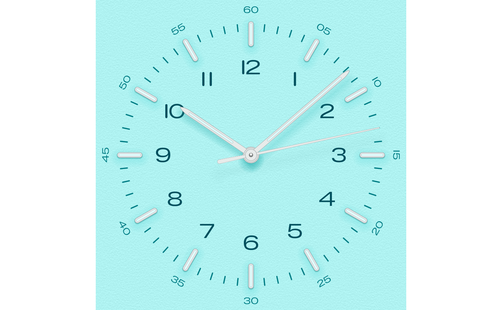
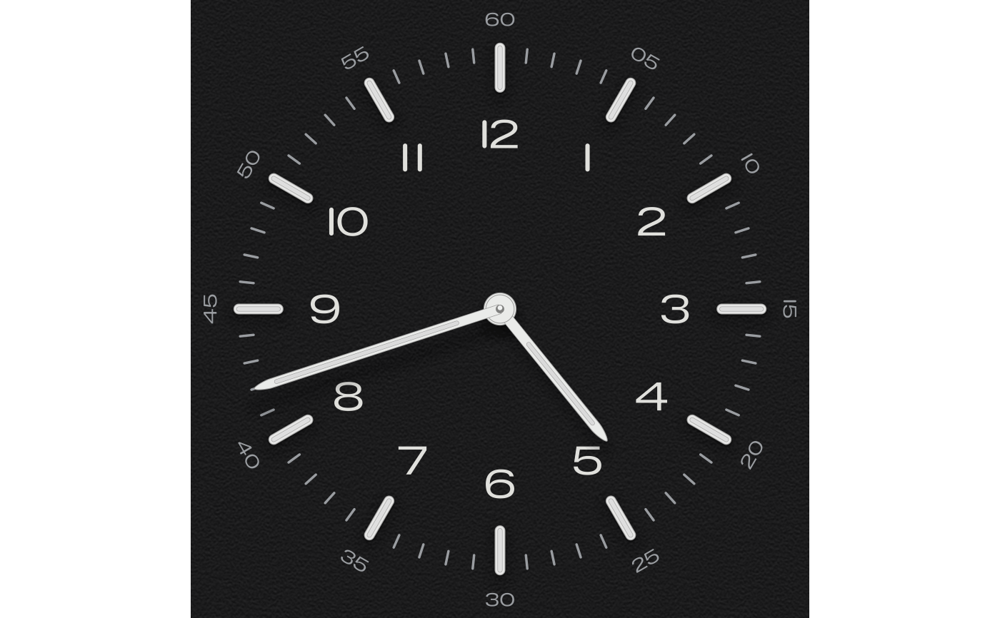

Draws the dial of the Bauhaus Clock screensaver as a ggplot: the minute track and its numerals, the steel hour indices with their lume inlays, the hour numerals, and the hour, minute and seconds hands with their soft shadows, on the dial's grained plate.
Usage
bauhaus_clock(
dial = "turquoise",
time = "10:08:13",
seconds = TRUE,
hour_numerals = TRUE,
minute_numerals = TRUE,
grain = TRUE
)Arguments
- dial
A dial name. Case, spaces, hyphens and underscores are ignored, so
"Signal Blue","signal-blue"and"signal_blue"all work. Seebauhaus_dial_names().- time
The time to show: a
POSIXtdate-time, or a string"HH:MM"or"HH:MM:SS". Defaults to 10:08:13, the time the screensaver's reference renders show.- seconds
Draw the seconds hand?
- hour_numerals
Draw the hour numerals (1 to 12)?
- minute_numerals
Draw the minute numerals ("05" to "60") outside the track?
- grain
Paper grain, as in
theme_bauhaus().
Value
A ggplot object. Its axes run from -1.16 to 1.16 (from -1.04 without minute numerals), with the centre of the dial at the origin and R = 1.
Details
Geometry follows the screensaver's measured design, with every length a fraction of R, the distance from the centre to the outer end of the 12 o'clock index. The numerals are the outlines of the screensaver's typeface, except that every "1" is a plain capsule, as on the dial. Everything is drawn as shapes in data coordinates, so the dial scales cleanly to any size; save it square. The steel is drawn flat, without the screensaver's per-pixel shading.
Examples
# \donttest{
bauhaus_clock("turquoise")

bauhaus_clock("noir", time = "16:42", seconds = FALSE)

# }
if (FALSE) {
ggplot2::ggsave("ocean.png", bauhaus_clock("ocean"), width = 6, height = 6)
}